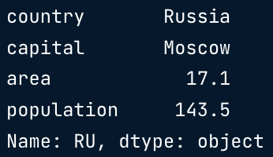
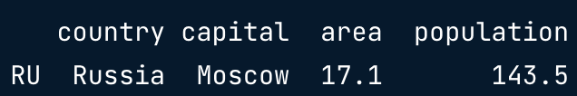
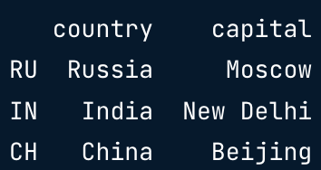

Intermediate Python
0. Matplotlib
0-0. Basic plots with Matplotlib
-
Matplotlib
-
import matplotlib.pyplot as plt
year = [1950, 1960,
1970, 1980]
pop = [2.519, 3.692, 5.263, 6.972]
plt.plot(year,
pop)
#tells Python what to plot and how to plot it
plt.show()

-
Scatter plot
-
import matplotlib.pyplot as plt
year = [1950, 1960,
1970, 1980]
pop = [2.519, 3.692, 5.263, 6.972]
plt.scatter(year,
pop)
plt.show()

-
to put the x-axis on a logarithmic scale
-
plt.scatter(gdp_cap, life_exp)
plt.xscale('log')
plt.show()
0-1. Histogram
-
Histogram
- Explore dataset
- Get idea about distribution
- default number of bins: 10
-
Matplotlib example
-
import matplotlib.pyplot as plt
help(plt.hist)
values
= [0, 0.6, 1.4, 1.6, 2.2, 2.5, 2.6, 3.2, 3.5, 3.9, 4.2, 6]
plt.hist(values,
bins=3)
plt.show()

-
example: Population pyramid
-
plt.show(): displays a plot
-
plt.clf(): cleans it up so you can start afresh.
0-2. Customization
-
Data visualization
-
Many options
- Different plot types
- Many customizations
-
Choice depends on
- Data
- Sotry you want to tell
-
Axis labels, Title, Ticks, ...
-
import matplotlib.pyplot as plt
year = [1950, 1951,
1952, ... ,2100]
pop =[2.538, 2.57, 2.62, ... ,10.85]
plt.plot(year,
pop)
#Add more data
year = [1800, 1850,
1900]+year
pop = [1.0, 1.262, 1.650]+pop
plt.xlabel('Year')
plt.ylabel('Population')
plt.title('World
Population Proejction')
plt.yticks([0, 2, 4, 6, 8, 10], ['0', '2B', '4B', '6B',
'8B', '10B'])
plt.show()
-
scatter plot에서 bubble size 옵션
-
plt.scatter(gdp_cap, life_exp, size=pop)

-
np.array(): creates a numpy array from the list
np_pop = np.array(pop)-
np_pop * 2 -> each array element will be doubled
1. Dictionaries & Pandas
1-0. Dictionaries, Part1
-
List
-
pop = [30.55, 2.77, 39.21]
countries = ["afghanistan",
"albania", "algeria"]
ind_alb =
countries.index("albania")
ind_alb #1
pop[ind_alb]
#2.77
-
Dictionary
-
world = {"afghanistan":30.55, "albania":2.77,
"algeria":39.21}
world["albania"] #2.77
-
Python can make the lookup of these keys very fast, even for
huge dictionaries
- Dictionaries are inherently unordered.
-
print out the keys in a dictionary
1-1. Dictionaries, Part2
-
The last pair specified will be kept in the resulting dictionary
-
dict_ex = {'a':1, 'a':2}
print(dict_ex) #{'a':2}
-
Recap
-
Keys have to be "immutable" objects
- ex. strings, booleans, integers, floats
-
Add a new key-value pair to a dictionary
-
world["sealand"] = 0.000027
"sealand" in world
#True
-
Change values
world["sealand"] = 0.000028
-
Remove a key-value pair
-
List vs. Dictionary
1-2. Pandas, Part1
-
Pandas
- High level data manipulation tool
- created by Wes McKinney
- Built on NumPy
- In 2D NumPy arrays, columns can't have different types
- de facto standard for dataset manipulation.
-
DataFrame from Dictionary
-
dict = {"country":["Brazil", "Russia", "India", "China",
"South Africa"], "capital":["Brasilia", "Moscow", "New Delhi",
"Beijing", "Pretoria"]}
import pandas as pd
brics =
pd.DataFrame(dict)
brics.index = ["BR", "RU", "IN", "CH",
"SA"]
-
brics = pd.read_csv("path/to/brics.csv",
index_col = 0)
#index_col -> the first column contains the row indexes
1-3. Pandas, Part2
-
Index and select data
- Square brackets
-
Advanced methods
-
Column Access []
-
brics["country"]
type(brics["country"])
#pandas.core.series.Series
- cf. Series: a 1-dimensional array that can be labeled
-
type(brisc[["country"]]) #pandas.core.frame.DataFrame
brics[["country",
"capital"]]
-
To select rows from a DataFrame
-
brics[1:4] #to get the second, third and fourth rows
-
Discussion []
- Square bracket: limited functionality
-
Ideally
- 2D NumPy arrays
-
my_array[rows, columns]
-
pandas
- loc (label-based)
- iloc (integer position-based)
-
Row Access loc
-
brics.loc["RU"]

result: Series
-
brics.loc[["RU"]]

result:
DataFrame
brics.loc[["RU", "IN", "CH"]]
-
Row & Column loc
-
brics.loc[["RU", "IN", "CH"], ["country", "capital"]]

-
brics.loc[:, ["country", "capital"]] #select all rows, 2
columns
-
Recap
-
Square brackets
-
Column access:
brics[["country", "capital"]]
-
Row access: only through slicing -
brics[1:4]
-
loc (label-based)
-
Row access:
brics.loc[["RU", "IN", "CH"]]
-
Column access:
brics.loc[:, ["country", "capital"]]
-
Row & Column access:
brics.loc[["RU", "IN", "CH"], ["country",
"capital"]]
-
If you want to subset Pandas DataFrames based on their position, or
index, you'll need the iloc function.
-
Row Access iloc
-
brics.iloc[[1]] #return the second row
brics.iloc[[1,2,3]]
brics.iloc[[1,2,3],
[0,1]]
brics.iloc[:, [0,1]]
2. Logic, Control Flow and Filtering
2-0. Comparison Operators
-
Other comparisons
-
ex.
"carl" < "chris" #True. According to the
alphabet, carl comes before chris.
- cf.
3 < "chris" #TypeError
-
For string comparison, Python determines the relationship based
on alphabetical order.
-
cf. a boolean is a special kind of integer:
True corresponds to 1, False corresponds
to 0
2-1. Boolean Operators
-
and
-
True and True #True
False and True #False
-
or
-
True or True #True
Flase or True #True
False or
False #False
-
not
-
not True #False
not False #True
-
not has a higher priority than and and or,
it is executed first.
-
NumPy
bmi > 21 and bmi < 22 #ValueError-
logical_and()
- ex.
np.logical_and(bmi>21, bmi<22)
- ex.
bmi[np.logical_and(bmi>21, bmi<22)]
-
logical_or()
-
logical_not()
-
cf. comparison operators(<, >=, ...) work with NumPy arrays
2-2. if, elif, else
- Conditional statements: if, else, elif
2-3. Filtering Pandas DataFrames
-
Select countries with area over 8 million km2
-
Boolean operators
-
import numpy as np
brics[np.logical_and(brics["area"]>8,
brics["area"]<10)]
3. Loops
3-0. while loop
-
While loop = repeated if statement
- Numerically calculating model
- "repeating action until condition is met"
3-1. for loop
-
ex.
fam = [1.73, 1.68, 1.71, 1.89]
for height in fam:
-
If you want index value as well -> enumerate
-
fam = [1.73, 1.68, 1.71, 1.89]
for index, height in
enumerate(fam):
print("index "+str(index)+": "+str(height))
-
Loop over string
3-2. Loop Data Structures Part 1
-
Dictionary
-
world = {"afghanistan":30.55, "albania":2.77,
"algeria":39.21}
for key, values in
world.items(): #method
print(key + "--" + str(value))
-
cf. dictionaries are inherently unordered -> the order in which
they're iterated over is not fixed.
-
2D NumPy arrays
-
import numpy as np
np_height = np.array([1.73, 1.68,
1.71, 1.89, 1.79])
np_weight = np.array([65.4, 59.2,
63.6, 88.4, 68.7])
meas = np.array([np_height,
np_weight])
for val in np.nditer(meas):
#function
print(val) #we get 10 printouts (first all the height, then
all the weights)
3-3. Loop Data Structures Part 2
-
in pandas DataFrame - iterrows
-
the row data that's generated by iterrows() on every run is a
Pandas Series.
-
not very efficient - on every iteration, you're creating a new
Pandas Series.
-
import pandas as pd
brics = pd.read_csv("brics.csv",
index_col = 0)
for lab, row in
brics.iterrows():
-
Selective print
-
for lab, row in brics.iterrows():
print(lab+": "+row["capital"])
-
Add column
-
for lab, row in brics.iterrows():
brics.loc[lab, "name_length"] = len(row["country"])
#not really efficient
-
brics["name_length"] =
brics["country"].apply(len) #better!
-
ex. country name 대문자로 바꾼 column 만들기
cars["COUNTRY"] = cars["country"].apply(str.upper)
4. Case Study: Hacker Statistics
4-0. Random Numbers
-
How to solve?
- Analytical
-
Simulate the process
-
Random generators
-
import numpy as np
np.random.rand() #create
a pseudo-random number in mathematical formula, between
0 and 1
-
np.random.seed(123) #ensures
"reproductibility"
np.random.rand()
#0.6964691855978616
np.random.rand()
#0.28613933495037946
np.random.seed(123)
np.random.rand()
#0.6964691855978616
np.random.rand()
#0.28613933495037946
- cf. pseudo-random: random but consistent
-
Coin toss
-
import numpy as np
np.random.seed(123)
coin =
np.random.randint(0,2) #randomly generate 0 or
1
print(coin)
4-1. Random Walk
-
Heads or Tails
-
import numpy as np
np.random.seed(123)
outcomes =
[]
for x in range(10):
coin = np.random.randint(0,2)
if coin==0:
else:
print(outcomes)
-
Heads or Tails: Random Walk
-
tails = [0]
for x in range(10):
coin = np.random.randint(0,2)
tails.append(tails[x] +
coin)
print(tails) #[0,0,1,1,1,1,1,1,2,3,3] the final element tells
you how often tails was thrown
-
max()
-
ex. to make sure that a variable x never goes below 10 when you
decrease it,
x = max(10, x-1)
4-2. Distribution
-
100 runs
-
import numpy as np
np.random.seed(123)
final_tails
= []
for x in range(100): #if we run more times(10,000
for example), the distribution will converge to a bell-shape
tails = [0]
for x in range(10):
coin = np.random.randint(0,2)
tails.append(tails[-1])
print(final_tails) #[3, 6, 4, 5, 4, 5, 3, ..., 4,]
-
visualizing a distribution -> histogram!
-
import matplotlib.pyplot as plt
plt.hist(final_tails,
bins=10)
plt.show()
-
To transpose NumPy array
-
np_aw_t = np.transpose(np_aw)
- Implement clumsiness (0.01% chance of falling down)
if np.random.rand() <= 0.001: